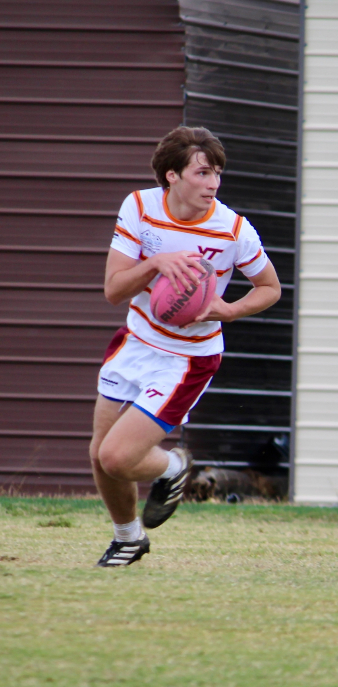
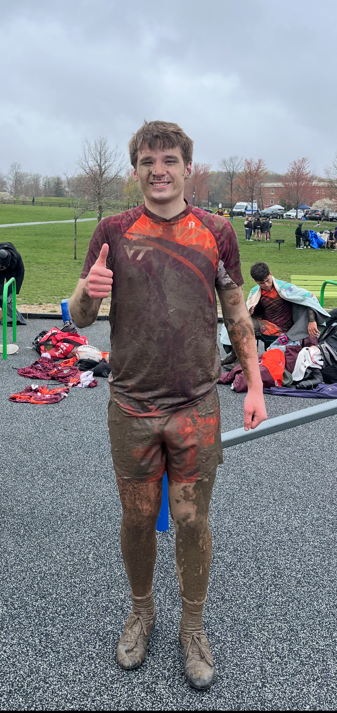

About Me
I’m Xavier, a computer science student at Virginia Tech in the College of Engineering. I’m currently pursuing a B.S. in Computer Science and actively seeking opportunities to grow through hands-on development work. My academic journey has been shaped by practical, semester long projects - from managing and visualizing social media analytics to deploying containerized web applications. I enjoy building solutions that combine technical complexity with thoughtful design, and I’m always looking for new ways to apply what I learn in class to real world challenges.
My technical interests span several areas, including cloud computing, web development, and geographic information systems (GIS). I’ve worked with platforms like Azure and ArcGIS Pro, and enjoy exploring how cloud services and spatial data can be integrated into practical applications. I also have experience with CAD tools like Fusion 360 and SolidWorks, which complement my broader foundation in software and web development. Whether designing user-friendly interfaces or deploying scalable projects, I’m always excited to work across both the creative and technical sides of computing.
Outside of school and computer science, I enjoy staying active and having fun. I play rugby, watch sports year-round, and try to snowboard whenever I can.

